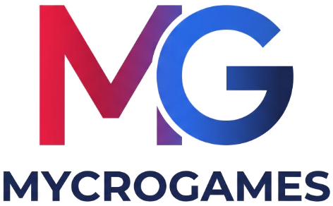

Um celular. Cinco party games. A galera reunida.
Jogo do Impostor, Quem será?, Quiz dos Games, Sobrevivente e Gamer Mímica — 100% offline, sem cadastro e sem coleta de dados.
Em breve na App Store
Jogo do Impostor, Quem será?, Quiz dos Games, Sobrevivente e Gamer Mímica — 100% offline, sem cadastro e sem coleta de dados.
Em breve na App Store